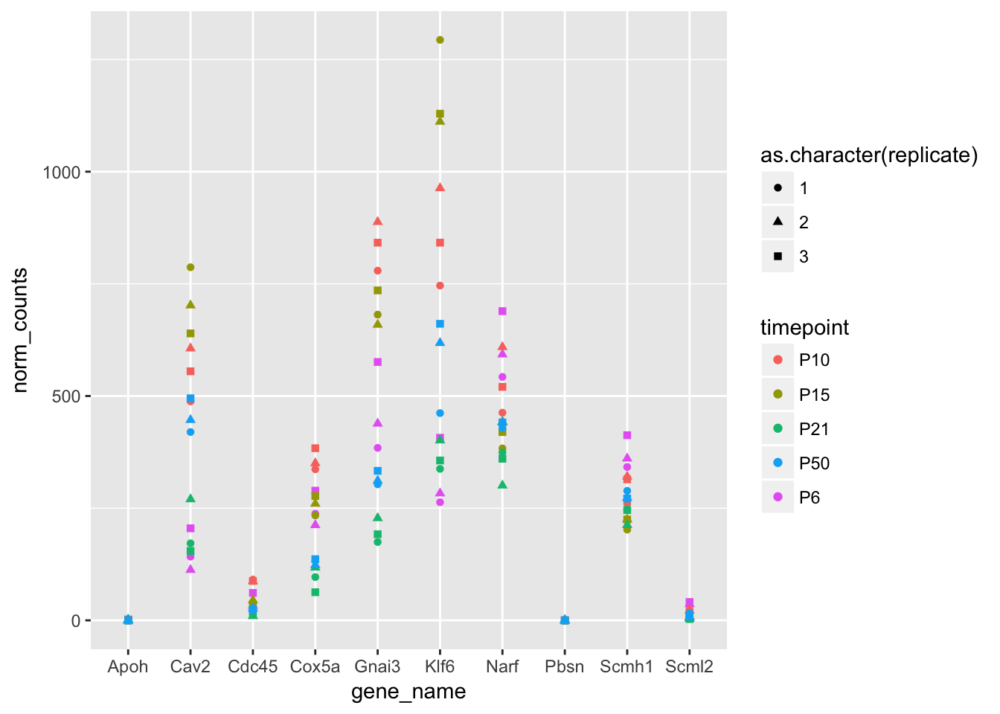

Learning Objectives
- Recall principles of data tidiness
- Use dplyr to explore RNA-seq data
- Use the split-apply-combine principles to summarise RNA-seq data
- Make plots with ggplot2 to explore expression changes in an RNA-seq timecourse.
In this lesson we’re going to use a published RNA-seq dataset to show how the concepts and tools from previous lessons can be applied to genomic data. The data comes fom Jeong et al., 2017 (https://www.nature.com/articles/s41467-017-00738-7) and is a summary of RNA-seq data from the mouse retina at several different timepoints. (HTSeq)[https://htseq.readthedocs.io/en/release_0.9.1/overview.html] was used to count the number of reads from each RNA-seq dataset aligning to each mouse gene, which were normalised for differences between libraries using the TMM method from the (edgeR)[http://bioconductor.org/packages/release/bioc/html/edgeR.html] package.
First let’s read in the prepared data and create a data frame.
expression_df <- read.table("expression_data.tsv", sep = "\t", header = TRUE)
head(expression_df)## ensembl_gene_id timepoint replicate norm_counts gene_name
## 1 ENSMUSG00000000001 P6 1 384.45093 Gnai3
## 2 ENSMUSG00000000003 P6 1 0.00000 Pbsn
## 3 ENSMUSG00000000028 P6 1 38.09874 Cdc45
## 4 ENSMUSG00000000031 P6 1 130.45933 H19
## 5 ENSMUSG00000000037 P6 1 34.63522 Scml2
## 6 ENSMUSG00000000049 P6 1 0.00000 Apoh
## gene_biotype exons_width_bp cluster
## 1 protein_coding 3262 5
## 2 protein_coding 1599 NA
## 3 protein_coding 4722 4
## 4 lincRNA 6343 1
## 5 protein_coding 23080 1
## 6 protein_coding 2662 NAChallenge
With a partner, discuss the data tidiness principles from yesterday and write the ones you can remember in the etherpad.
Challenge
Take a look at the RNA-seq dataset. What data does each column hold? Does this data frame follow the data tidiness principles? Hint: the
summaryfunction might be useful here.
This dataset follows the data tidiness principles from the data organisation lesson: each column contains a different variable and each row is a different observation.
As well as the RNA-seq data itself (the “norm_counts” column), it also contains some extra information about the genes, such as the different gene biotypes. For this lesson, we’re only interested in protein coding genes, so let’s subset the data to remove other gene biotypes. First, what gene biotypes are in this dataset?
table(expression_df$gene_biotype)##
## 3prime_overlapping_ncrna antisense IG_C_gene
## 15 22140 195
## IG_D_gene IG_J_gene IG_LV_gene
## 375 1320 4560
## IG_V_gene IG_V_pseudogene lincRNA
## 30 15 26925
## miRNA misc_RNA Mt_rRNA
## 30150 8880 30
## Mt_tRNA polymorphic_pseudogene processed_transcript
## 330 225 10590
## protein_coding pseudogene rRNA
## 341100 89175 5295
## sense_intronic sense_overlapping snoRNA
## 1350 150 23340
## snRNA TR_V_gene TR_V_pseudogene
## 20805 675 15Most genes are protein coding but there are many other gene biotypes present.
filtered_df <- filter(expression_df, gene_biotype == "protein_coding")
table(filtered_df$gene_biotype)##
## 3prime_overlapping_ncrna antisense IG_C_gene
## 0 0 0
## IG_D_gene IG_J_gene IG_LV_gene
## 0 0 0
## IG_V_gene IG_V_pseudogene lincRNA
## 0 0 0
## miRNA misc_RNA Mt_rRNA
## 0 0 0
## Mt_tRNA polymorphic_pseudogene processed_transcript
## 0 0 0
## protein_coding pseudogene rRNA
## 341100 0 0
## sense_intronic sense_overlapping snoRNA
## 0 0 0
## snRNA TR_V_gene TR_V_pseudogene
## 0 0 0Challenge
How many different timepoints are there in this dataset? How many different replicates are there for each timepoint?
table(filtered_df$replicate, filtered_df$timepoint)##
## P10 P15 P21 P50 P6
## 1 22740 22740 22740 22740 22740
## 2 22740 22740 22740 22740 22740
## 3 22740 22740 22740 22740 22740There are five different timepoints with three replicates each.
How much variability is there between replicates? Let’s make some plots to see, but we’ll just use a subset of the data. We can use filter to select a subset of the data.
genes_sub <- filtered_df$ensembl_gene_id[1:10]
counts_sub <- filter(filtered_df, ensembl_gene_id %in% genes_sub)
ggplot(counts_sub, aes(x = gene_name, y = norm_counts, colour = timepoint, shape = as.character(replicate))) +
geom_point() 
The three replicates at each timepoint look pretty close for all these genes, so let’s assume that there’s no systematic biases between the three replicates. There are better ways to check if there are biases or batch effects in your RNA-seq data, like performing a Principal Component Analysis, but we don’t have time to cover that here.
Remember the split-apply-combine concept from the dplyr lesson? We can apply that here to get the average expression for each gene at each timepoint. Here we’re splitting the data into groups based on the gene ID and timepoint, then summarising each group by taking the mean of the counts and putting it in a new column.
summary_df <- filtered_df %>%
group_by(ensembl_gene_id, gene_name, exons_width_bp, cluster, timepoint) %>%
summarise(mean_counts = mean(norm_counts))We can plot the results with the ggplot2 package to see what the overall gene expression pattern looks like over time.
ggplot(summary_df, aes(x = timepoint, y = mean_counts)) +
geom_boxplot() +
scale_y_log10()## Warning: Transformation introduced infinite values in continuous y-axis## Warning: Removed 31430 rows containing non-finite values (stat_boxplot).Notice the order of the x axis. This is sorted alphabetically, which doesn’t give us the right order in time. The “timepoint” column is a factor, and the levels of the factor are by default sorted alphabetically, but we can change that by manually specifying the order we want the levels to be in. To do this, we can use the “mutate” function from dplyr.
summary_df <- mutate(summary_df, timepoint = factor(timepoint, levels = c("P6", "P10", "P15", "P21", "P50")))
ggplot(summary_df, aes(x = timepoint, y = mean_counts)) +
geom_boxplot() +
scale_y_log10()## Warning: Transformation introduced infinite values in continuous y-axis## Warning: Removed 31430 rows containing non-finite values (stat_boxplot).That’s better!
In order to more easily compare expression between different genes, it’s often useful to calculate expression normalised by gene length. In papers you often see “TPM” (transcripts per million reads) or “FPKM” (fragments per kilobase per million reads), which also normalise for the number of mapped reads. Calculating those is a bit more complicated, and you can read more about it (here)[https://haroldpimentel.wordpress.com/2014/05/08/what-the-fpkm-a-review-rna-seq-expression-units/]. Important: these measures should only be used for comparing relative gene expression within a sample, or for visualisation. Use raw counts for doing differential expression analysis.
Challenge
Calculate expression normalised by gene length in kilobases, using the “norm_counts” and “exons_width_bp” columns, and add this to the dataset as a new column, using the
mutatefunction.
summary_df <- mutate(summary_df, expr_per_kb = mean_counts / (exons_width_bp / 1000) )Using the expression normalised by the gene length, we can safely compare between genes in the same sample. For example, which genes have the highest expression at P6?
max_p6 <- summary_df %>%
filter(timepoint == "P6") %>%
ungroup() %>%
top_n(n = 10, wt = expr_per_kb)
max_p6## # A tibble: 10 x 7
## ensembl_gene_id gene_name exons_width_bp cluster timepoint
## <fctr> <fctr> <int> <int> <fctr>
## 1 ENSMUSG00000001270 Ckb 1478 1 P6
## 2 ENSMUSG00000029580 Actb 7647 5 P6
## 3 ENSMUSG00000034994 Eef2 3098 5 P6
## 4 ENSMUSG00000049775 Tmsb4x 2330 4 P6
## 5 ENSMUSG00000056201 Cfl1 1148 5 P6
## 6 ENSMUSG00000064351 mt-Co1 1545 7 P6
## 7 ENSMUSG00000064354 mt-Co2 684 7 P6
## 8 ENSMUSG00000064357 mt-Atp6 681 7 P6
## 9 ENSMUSG00000064358 mt-Co3 784 7 P6
## 10 ENSMUSG00000064360 mt-Nd3 348 7 P6
## # ... with 2 more variables: mean_counts <dbl>, expr_per_kb <dbl>What about the gene from each cluster with the highest expression at this timepoint? Using the group_by function before top_n will return the top genes from each group.
max_p6 <- summary_df %>%
filter(timepoint == "P6") %>%
group_by(cluster) %>%
top_n(n = 1, wt = expr_per_kb)
max_p6## # A tibble: 8 x 7
## # Groups: cluster [8]
## ensembl_gene_id gene_name exons_width_bp cluster timepoint
## <fctr> <fctr> <int> <int> <fctr>
## 1 ENSMUSG00000001270 Ckb 1478 1 P6
## 2 ENSMUSG00000025982 Sf3b1 6192 2 P6
## 3 ENSMUSG00000029580 Actb 7647 5 P6
## 4 ENSMUSG00000036905 C1qb 1088 3 P6
## 5 ENSMUSG00000049775 Tmsb4x 2330 4 P6
## 6 ENSMUSG00000050621 Gm9846 341 NA P6
## 7 ENSMUSG00000060802 B2m 860 6 P6
## 8 ENSMUSG00000064351 mt-Co1 1545 7 P6
## # ... with 2 more variables: mean_counts <dbl>, expr_per_kb <dbl>What are the expression patterns of these genes over the timecourse?
Challenge
Filter the summary_df data frame to contain only rows referring to the genes with the highest expression in each cluster at P6. Make a plot to show how the expression of these genes changes over time.
summary_df %>%
filter(gene_name %in% max_p6$gene_name) %>%
ggplot(aes(x = timepoint, y = expr_per_kb, colour = gene_name)) +
geom_line(aes(group = gene_name)) +
geom_point() +
facet_wrap(~cluster, scales = "free_y")Challenge
Repeat the analysis above with the top ten genes with the highest expression at P6.
Challenge
Repeat the analysis above with the genes with the highest expression at a different timepoint.
Challenge
Customise your plots!
Data Carpentry,
2017. License. Contributing.
Questions? Feedback?
Please file
an issue on GitHub.
On
Twitter: @datacarpentry